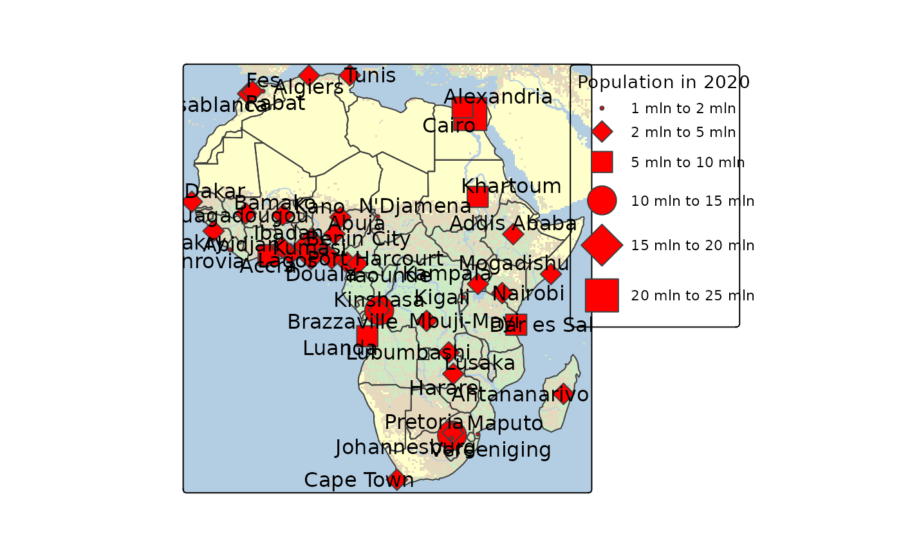
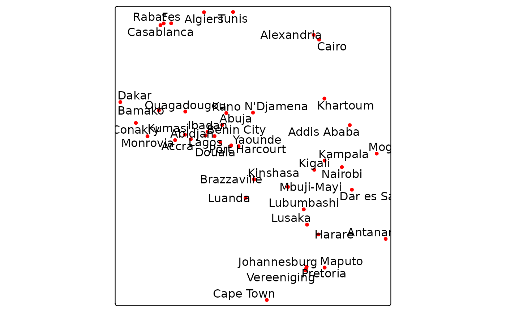
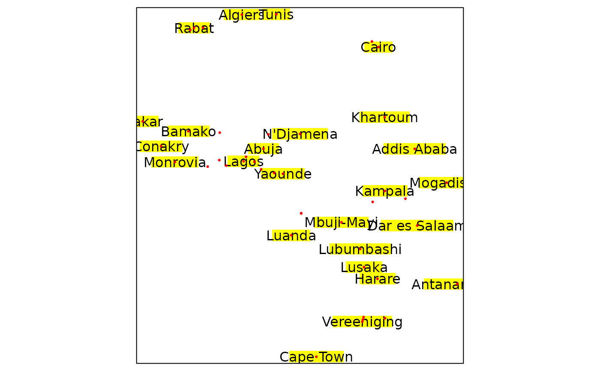
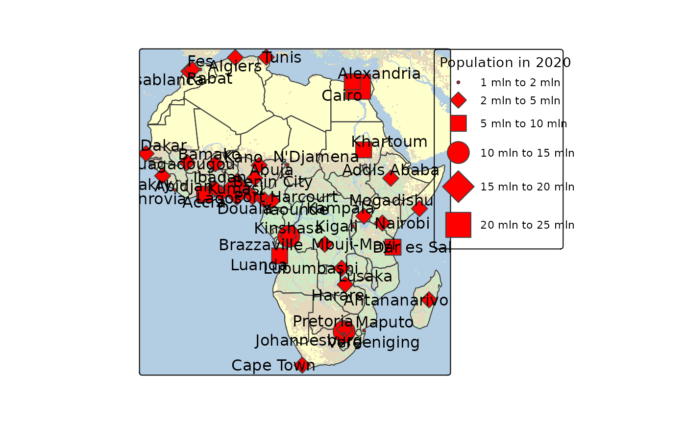
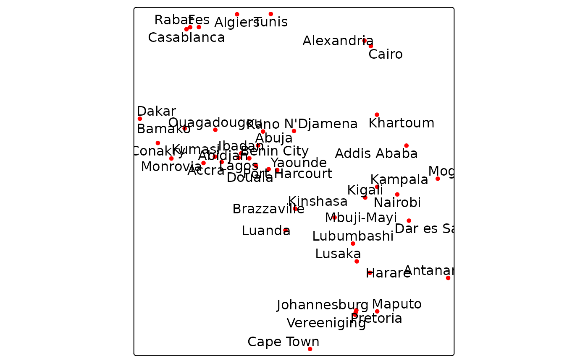
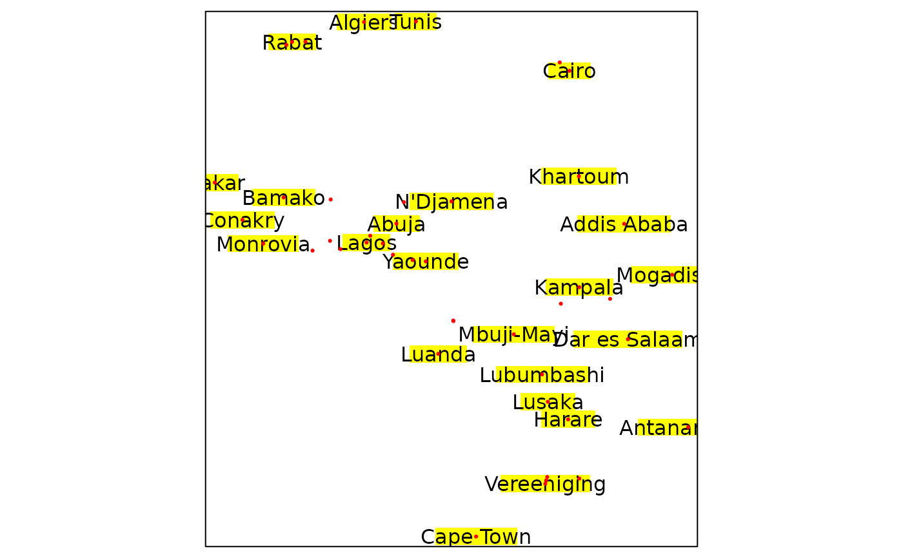

Map layer that draws symbols Supported visual variables are: text
(the text itself) col (color), size (font size), and fontface (font face).
Usage
tm_text(
text = tm_const(),
text.scale = tm_scale(),
text.legend = tm_legend(),
text.chart = tm_chart_none(),
text.free = NA,
size = tm_const(),
size.scale = tm_scale(),
size.legend = tm_legend(),
size.chart = tm_chart_none(),
size.free = NA,
col = tm_const(),
col.scale = tm_scale(),
col.legend = tm_legend(),
col.chart = tm_chart_none(),
col.free = NA,
col_alpha = tm_const(),
col_alpha.scale = tm_scale(),
col_alpha.legend = tm_legend(),
col_alpha.chart = tm_chart_none(),
col_alpha.free = NA,
fontface = tm_const(),
fontface.scale = tm_scale(),
fontface.legend = tm_legend(),
fontface.chart = tm_chart_none(),
fontface.free = NA,
fontfamily = "",
bgcol = tm_const(),
bgcol.scale = tm_scale(),
bgcol.legend = tm_legend(),
bgcol.chart = tm_chart_none(),
bgcol.free = NA,
bgcol_alpha = tm_const(),
bgcol_alpha.scale = tm_scale(),
bgcol_alpha.legend = tm_legend(),
bgcol_alpha.chart = tm_chart_none(),
bgcol_alpha.free = NA,
xmod = 0,
xmod.scale = tm_scale(),
xmod.legend = tm_legend_hide(),
xmod.chart = tm_chart_none(),
xmod.free = NA,
ymod = 0,
ymod.scale = tm_scale(),
ymod.legend = tm_legend_hide(),
ymod.chart = tm_chart_none(),
ymod.free = NA,
angle = 0,
angle.scale = tm_scale(),
angle.legend = tm_legend_hide(),
angle.chart = tm_chart_none(),
angle.free = NA,
shadow = FALSE,
plot.order = tm_plot_order("AREA", reverse = FALSE, na.order = "bottom"),
zindex = NA,
group = NA,
group.control = "check",
points.only = "ifany",
just = "center",
along.lines = FALSE,
bg.padding = 0.4,
clustering = FALSE,
point.label = FALSE,
point.label.gap = 0,
point.label.method = "SANN",
remove.overlap = FALSE,
...
)
tm_labels(
text = tm_const(),
text.scale = tm_scale(),
text.legend = tm_legend(),
text.chart = tm_chart_none(),
text.free = NA,
size = tm_const(),
size.scale = tm_scale(),
size.legend = tm_legend(),
size.chart = tm_chart_none(),
size.free = NA,
col = tm_const(),
col.scale = tm_scale(),
col.legend = tm_legend(),
col.chart = tm_chart_none(),
col.free = NA,
col_alpha = tm_const(),
col_alpha.scale = tm_scale(),
col_alpha.legend = tm_legend(),
col_alpha.chart = tm_chart_none(),
col_alpha.free = NA,
fontface = tm_const(),
fontface.scale = tm_scale(),
fontface.legend = tm_legend(),
fontface.chart = tm_chart_none(),
fontface.free = NA,
fontfamily = "",
bgcol = tm_const(),
bgcol.scale = tm_scale(),
bgcol.legend = tm_legend(),
bgcol.chart = tm_chart_none(),
bgcol.free = NA,
bgcol_alpha = tm_const(),
bgcol_alpha.scale = tm_scale(),
bgcol_alpha.legend = tm_legend(),
bgcol_alpha.chart = tm_chart_none(),
bgcol_alpha.free = NA,
xmod = 0,
xmod.scale = tm_scale(),
xmod.legend = tm_legend_hide(),
xmod.chart = tm_chart_none(),
xmod.free = NA,
ymod = 0,
ymod.scale = tm_scale(),
ymod.legend = tm_legend_hide(),
ymod.chart = tm_chart_none(),
ymod.free = NA,
angle = 0,
angle.scale = tm_scale(),
angle.legend = tm_legend_hide(),
angle.chart = tm_chart_none(),
angle.free = NA,
shadow = FALSE,
plot.order = tm_plot_order("AREA", reverse = FALSE, na.order = "bottom"),
zindex = NA,
group = NA,
group.control = "check",
points.only = "ifany",
along.lines = TRUE,
clustering = FALSE,
point.label = TRUE,
point.label.gap = 0.3,
remove.overlap = FALSE,
...
)Arguments
- text, text.scale, text.legend, text.chart, text.free
Visual variable that determines the text. See details.
- size, size.scale, size.legend, size.chart, size.free
Visual variable that determines the font size. See details.
- col, col.scale, col.legend, col.chart, col.free
Visual variable that determines the col color. See details.
- col_alpha, col_alpha.scale, col_alpha.legend, col_alpha.chart, col_alpha.free
Visual variable that determines the border color alpha transparency. See Details.
- fontface, fontface.scale, fontface.legend, fontface.chart, fontface.free
Visual variable that determines the font face. See Details.
- fontfamily
The font family. See gpar() for details.
- bgcol, bgcol.scale, bgcol.legend, bgcol.chart, bgcol.free
Visual variable that determines the background color. See Details.
- bgcol_alpha, bgcol_alpha.scale, bgcol_alpha.legend, bgcol_alpha.chart, bgcol_alpha.free
Visual variable that determines the background color transparency. See Details.
- xmod, xmod.scale, xmod.legend, xmod.chart, xmod.free
Transformation variable that determines the x offset. See details.
- ymod, ymod.scale, ymod.legend, ymod.chart, ymod.free
Transformation variable that determines the y offset. See details. the text. See details.
- angle, angle.scale, angle.legend, angle.chart, angle.free
Rotation angle
- shadow
Shadow behind the text. Logical or color.
- plot.order
Specification in which order the spatial features are drawn. See
tm_plot_order()for details.- zindex
Map layers are drawn on top of each other. The
zindexnumbers (one for each map layer) determines the stacking order. By default the map layers are drawn in the order they are called.- group
Name of the group to which this layer belongs. This is only relevant in view mode, where layer groups can be switched (see
group.control)- group.control
In view mode, the group control determines how layer groups can be switched on and off. Options:
"radio"for radio buttons (meaning only one group can be shown),"check"for check boxes (so multiple groups can be shown), and"none"for no control (the group cannot be (de)selected).- points.only
should only point geometries of the shape object (defined in
tm_shape()) be plotted? By default"ifany", which meansTRUEin case a geometry collection is specified.- just
justification of the text relative to the point coordinates. Either one of the following values:
"left","right","center","bottom", and"top", or a vector of two values where first value specifies horizontal and the second value vertical justification. Besides the mentioned values, also numeric values between 0 and 1 can be used. 0 means left justification for the first value and bottom justification for the second value. Note that in view mode, only one value is used.- along.lines
logical that determines whether labels are rotated along the spatial lines. Only applicable if a spatial lines shape is used.
- bg.padding
The padding of the background in terms of line heights.
- clustering
value that determines whether the text labels are clustered in
"view"mode. One of:TRUE,FALSE, or the output ofmarkerClusterOptions.- point.label
logical that determines whether the labels are placed automatically.
- point.label.gap
numeric that determines the gap between the point and label
- point.label.method
the optimization method, either
"SANN"for simulated annealing (the default) or"GA"for a genetic algorithm.- remove.overlap
logical that determines whether the overlapping labels are removed
- ...
to catch deprecated arguments from version < 4.0
Details
The visual variable arguments (e.g. col) can be specified with either a
data variable name (of the object specified in tm_shape()), or with a visual
value (for col, a color is expected). Multiple values can be specified:
in that case facets are created. These facets can be combined with other
faceting data variables, specified with tm_facets().
The .scale arguments determine the used scale to map the data values to
visual variable values. These can be specified with one of the available
tm_scale_() functions. The default scale that is used is specified by the
tmap option scales.var.
The .legend arguments determine the used legend, specified with tm_legend().
The default legend and its settings are determined by the tmap options legend..
The .free arguments determine whether scales are applied freely across facets,
or shared. A logical value is required. They can also be specified with a
vector of three logical values; these determine whether scales are applied
freely per facet dimension. This is only useful when facets are applied
(see tm_facets()). There are maximally three facet dimensions: rows, columns,
and pages. This only applies for a facet grid (tm_facets_grid()).
For instance, col.free = c(TRUE, FALSE, FALSE) means that for the visual
variable col, each row of facets will has its own scale, and therefore its
own legend. For facet wraps and stacks (tm_facets_wrap() and tm_facets_stack())
there is only one facet dimension, so the .free argument requires only one logical value.
Examples
# Need to be updated. The following is just to illustrate bgcol(_alpha)
tm_shape(World) + tm_polygons() +
tm_text("name", bgcol = "economy", bgcol_alpha = .5, shadow = TRUE)
#> Error: Incorrect values for layer text, aesthetic text; values should conform visual variable "text".
tm_shape(World) +
tm_text(text = "name",
size = .4,
bgcol = "economy")
#> Error: Incorrect values for layer text, aesthetic text; values should conform visual variable "text".
tm_shape(World) +
tm_text(text = "name",
size = .4,
bgcol = "economy",
bgcol.scale = tm_scale_categorical(values = cols4all::.P$hcl$cat$set2),
bgcol_alpha = "pop_est",
bgcol_alpha.scale = tm_scale_intervals(style = "kmeans"))
#> Error: Incorrect values for layer text, aesthetic text; values should conform visual variable "text".
tm_shape(metro) +
tm_text(text = "name", size = "pop2020", size.legend = tm_legend_hide())
 ## xymod
metro$initial = substr(metro$name,1,1)
metro$az = (match(metro$initial, LETTERS)-1) /25
tm_shape(metro) +
tm_dots("red") +
tm_text("initial", ymod = "az")
## xymod
metro$initial = substr(metro$name,1,1)
metro$az = (match(metro$initial, LETTERS)-1) /25
tm_shape(metro) +
tm_dots("red") +
tm_text("initial", ymod = "az")
 # angle
tm_shape(World) +
tm_polygons() +
tm_shape(metro) +
tm_text(text = "name", size = "pop2020",
angle = -30, shadow = TRUE)

metro$upside_down = ifelse(sf::st_coordinates(metro)[,2] < 0, 180, 0)
tm_shape(metro) +
tm_text(text = "name", size = "pop2020",
angle = "upside_down", size.legend = tm_legend_hide())

DE = World[World$name == "Germany",]
rivers_DE = sf::st_intersection(rivers, DE)
#> Warning: attribute variables are assumed to be spatially constant throughout all geometries
tm_shape(DE) +
tm_polygons() +
tm_shape(rivers_DE) +
tm_lines(lwd = "strokelwd", lwd.scale = tm_scale_asis()) +
tm_labels("name")
#> Error in pointLabel2(x = rect[, 1], y = rect[, 2], width = rect[, 3], height = rect[, 4], bbx = bbx, gap = yIn * lineIn * args$point.label.gap, method = args$point.label.method): could not find function "pointLabel2"
metroAfrica = sf::st_intersection(metro, World[World$continent == "Africa", ])
#> Warning: attribute variables are assumed to be spatially constant throughout all geometries
# remove.overlap
tm_shape(metroAfrica) +
tm_text("name", bgcol = "yellow") +
tm_dots("red")
tm_shape(metroAfrica) +
tm_text("name", bgcol = "yellow", remove.overlap = TRUE) +
tm_dots("red")

# tm_labels uses a labeling algorithm that uses randomization
# (so rerunning this code may give different outcomes, unless set.seed is used)
tm_shape(metroAfrica) +
tm_labels("name", bgcol = "yellow") +
tm_dots("red")
#> Error in pointLabel2(x = rect[, 1], y = rect[, 2], width = rect[, 3], height = rect[, 4], bbx = bbx, gap = yIn * lineIn * args$point.label.gap, method = args$point.label.method): could not find function "pointLabel2"
##### v3 examples
current.mode <- tmap_mode("plot")
#> tmap mode set to 'plot'
data(World, metro)
tm_shape(World) +
tm_text("name", size="AREA")
#> Error: Incorrect values for layer text, aesthetic text; values should conform visual variable "text".
tm_shape(World) +
tm_text("name", size="pop_est", col="continent", palette="Dark2",
title.size = "Population", title.col="Continent") +
tm_legend(outside = TRUE)
#> tm_text: Deprecated tmap v3 code detected. Code translated to v4
#> Warning: v3 code detected: as of tmap v4, tm_legend should be specified per visual variable (e.g. with the argument fill.legend of tm_polygons
#> Error: Incorrect values for layer text, aesthetic text; values should conform visual variable "text".
tmap_mode("view")
#> tmap mode set to 'view'
if (FALSE) {
require(tmaptools)
metro_aus <- crop_shape(metro, bb("Australia"))
tm_shape(metro_aus) +
tm_dots() +
tm_text("name", just = "top")
# alternative
tm_shape(metro_aus) +
tm_markers(text = "name")
}
# restore current mode
tmap_mode(current.mode)
#> tmap mode set to 'plot'
# angle
tm_shape(World) +
tm_polygons() +
tm_shape(metro) +
tm_text(text = "name", size = "pop2020",
angle = -30, shadow = TRUE)

metro$upside_down = ifelse(sf::st_coordinates(metro)[,2] < 0, 180, 0)
tm_shape(metro) +
tm_text(text = "name", size = "pop2020",
angle = "upside_down", size.legend = tm_legend_hide())

DE = World[World$name == "Germany",]
rivers_DE = sf::st_intersection(rivers, DE)
#> Warning: attribute variables are assumed to be spatially constant throughout all geometries
tm_shape(DE) +
tm_polygons() +
tm_shape(rivers_DE) +
tm_lines(lwd = "strokelwd", lwd.scale = tm_scale_asis()) +
tm_labels("name")
#> Error in pointLabel2(x = rect[, 1], y = rect[, 2], width = rect[, 3], height = rect[, 4], bbx = bbx, gap = yIn * lineIn * args$point.label.gap, method = args$point.label.method): could not find function "pointLabel2"
metroAfrica = sf::st_intersection(metro, World[World$continent == "Africa", ])
#> Warning: attribute variables are assumed to be spatially constant throughout all geometries
# remove.overlap
tm_shape(metroAfrica) +
tm_text("name", bgcol = "yellow") +
tm_dots("red")
tm_shape(metroAfrica) +
tm_text("name", bgcol = "yellow", remove.overlap = TRUE) +
tm_dots("red")

# tm_labels uses a labeling algorithm that uses randomization
# (so rerunning this code may give different outcomes, unless set.seed is used)
tm_shape(metroAfrica) +
tm_labels("name", bgcol = "yellow") +
tm_dots("red")
#> Error in pointLabel2(x = rect[, 1], y = rect[, 2], width = rect[, 3], height = rect[, 4], bbx = bbx, gap = yIn * lineIn * args$point.label.gap, method = args$point.label.method): could not find function "pointLabel2"
##### v3 examples
current.mode <- tmap_mode("plot")
#> tmap mode set to 'plot'
data(World, metro)
tm_shape(World) +
tm_text("name", size="AREA")
#> Error: Incorrect values for layer text, aesthetic text; values should conform visual variable "text".
tm_shape(World) +
tm_text("name", size="pop_est", col="continent", palette="Dark2",
title.size = "Population", title.col="Continent") +
tm_legend(outside = TRUE)
#> tm_text: Deprecated tmap v3 code detected. Code translated to v4
#> Warning: v3 code detected: as of tmap v4, tm_legend should be specified per visual variable (e.g. with the argument fill.legend of tm_polygons
#> Error: Incorrect values for layer text, aesthetic text; values should conform visual variable "text".
tmap_mode("view")
#> tmap mode set to 'view'
if (FALSE) {
require(tmaptools)
metro_aus <- crop_shape(metro, bb("Australia"))
tm_shape(metro_aus) +
tm_dots() +
tm_text("name", just = "top")
# alternative
tm_shape(metro_aus) +
tm_markers(text = "name")
}
# restore current mode
tmap_mode(current.mode)
#> tmap mode set to 'plot'